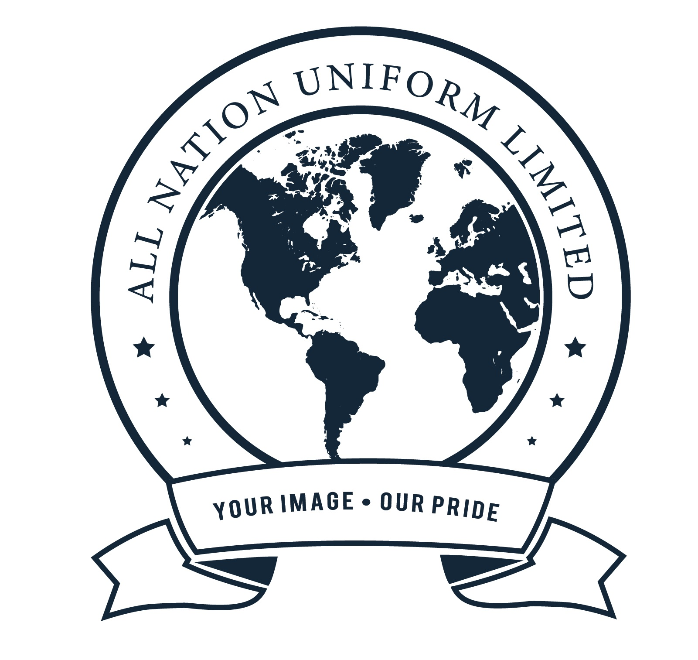

Abidur Rahman
System Administrator
About Me
I am an ambitious system administrator with a postgraduate degree and certifications in cloud computing technologies. I am a passionate cloud engineer with a proven track record of designing, building, and managing cloud-based applications with an emphasis on improving developer experience. Open to new opportunities to grow as a cloud/platform engineer.
I have completed a Business Administration post-graduate in Finance and Supply Chain with experience in cloud administration, system and impact analysis, prospecting tools (CRM), financing customer service skills, Business Analysis, project management, B2B sales in IaaS, SaaS & PaaS, data management, and customer support. Also, I have experience collaborating with business and operations stakeholders with intense interpersonal, written, verbal, presentation, and communication skills that foster teamwork, and build confidence and support for one's ideas.
Professional Experience !!!
System Administrator
Samaha
1. Collaborated with development teams to integrate and optimize cloud-based applications on Azure, leading to a 10% increase in overall system efficiency and performance.
2. Demonstrated exceptional problem-solving skills by effectively responding to high-priority incidents and leading system recovery efforts, ensuring minimal 5% downtime and 95% business systems continuity.
3. Automated the employee onboarding process with Microsoft Power Automate and Forms, reducing costs by 15%.
4. Set up a CDN (AWS CloudFront) distribution to substantially reduce response times and direct calls to S3.
5. Monitored and managed security controls, including identity and access management, data loss prevention, and threat detection.

Partner Advisor
Teleperformance
As part of Google External Workforce supported by Teleperformance SE:
1. Optimized system performance through meticulous monitoring, analysis, and tuning, resulting in a 25% increase in efficiency and overall system reliability.
2. Provided expert information technology customer support to GWS end-users and guidance to partners using the GCP console, leading to a 10% increase in business revenue from the previous quarter.
3. Coached and mentored 4 teams of 43 cloud sales representatives, and 4 team leads, resulting in a 57% increase in sales performance and a 35% improvement in quarterly revenue targets.
4. Played a key role in identifying and promoting Mandiant's cyber security solutions (SecOps) to clients, and achieved a 12% increase in business revenue from the previous quarter by driving demand generation and facilitating meetings with security experts to address their specific needs.
5. Leveraged Salesforce to create customized reports and dashboards that provided real-time data providing valuable insights into pipeline performance, ACV, and performance in Salesforce by ensuring 100% track records.

Project Manager
All Nation Uniform Ltd.
1. Successfully implemented and managed complex network infrastructures, including server provisioning, network security protocol and configured devices increased 12% connectivity while managing basic network troubleshooting.
2. Streamlined operations and improved efficiency through the implementation of innovative business process automation solutions, which increased productivity to 125%.
3. Configured and administered user accounts, permissions, and access rights within the Office 365 environment (Entra ID) to ensure 100% business requirements and support.
4. . Delivered exceptional customer service and technical support, resolving a wide range of IT issues and ensuring a 25% increase in client satisfaction.
Team Lead
The Financial Express
1. Coordinated a few projects by Financial Express “Youth Desk” on Social Media platforms to increase online subscribers and viewers up to 70%.
2. Contributed articles for “Youth Express” and “Education & Career Express” Pages.
3. Lead Campus Ambassadors to bring creative content from their university to report and publish in the National Newspapers.
4. Arranged University’s International and National event partnership with The Financial Express.